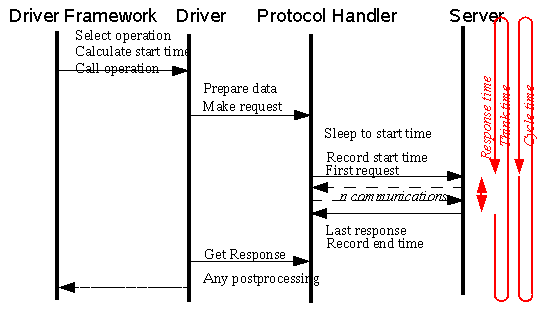
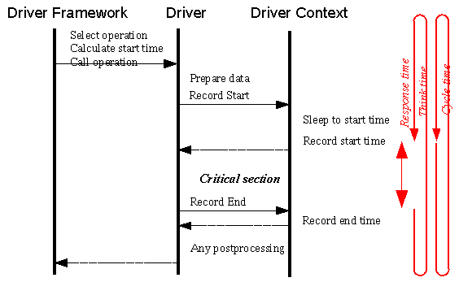

It is necessary for a benchmark to collect timestamps at the beginning and end of the operations. Moreover, for server oriented benchmarks the timestamps collected must accurately reflect the actual time the request is sent and received. Timestamps taken before the preparation of the request and after processing of the response will include the time the client spends on the data preparation and validation, so the results will be dependent on client performance. The Faban driver framework provides extensive but also automated support for recording times. There are two mechanisms for time recording as follows:
Server
(automatic) time
recording
The
timestamps are recorded at the transport layer, transparent from the
supplied benchmark driver. A timestamp is taken just before the first
request of the operation is sent to the server and after the response
to the last request is received. The timestamps are automatically
transferred to the metrics object and will not include the time spent
on the client side for data preparation and processing the results.
Client
(manual) time
recording
The timestamps are manually recorded
by the
supplied driver by calling DriverContext.recordTime()
both before and after the critical section of the operation. The driver
framework automatically determines whether it is the start or end of
the critical section. This is especially useful if the benchmark
operation actually measures client performance and/or makes no network
calls.
Operations typically have three sections, as follows:
All operations have a critical section for which time is measured. For operations measuring network responses it is from the time the request is sent to the time the response is received. The non-critical section is the time used for preparing the data and valiudating the response. In non-network operations this time needs to be defined by the provider of the benchmark driver.
The picture gets a little more complex as we account for the think time or cycle time. Naturally, we will want the think time or cycle to end at the start of the critical section of the operation, not at the start of the non-critical part of the operation or data preparation. So, for client-server benchmarks, ending the think time or cycle time will cause a request to be sent right away without the delay of preparing the data.
It
makes sense to start the non-critical part of the operation sometime
before the end of the think time or cycle time. In order to provide
maximum allowance for data processing and data preparation, the
framework selects an operation and calls it as soon as the previous
operation ends. This happens without delay. With automatic time
recording, the data is sent to the transport layer but held there until
the end of the think or cycle time when the transport actually makes
the request. With manual time recording, the Context.recordTime() will
block until the end of the think or cycle time so the critical section
of the operation accurately starts at the desired point in time. All
processing of non-critical parts of the operation is done inside the
think/cycle timespan. The following figures shows the different timing
characteristics for the two timing modes:

Figure
illustrating
the calling sequence and timing for automated time recording

Figure illustrating the calling sequence and timing for manual time recording
In many cases, an operation consists
of multiple
calls to the SUT and some processing between these calls. In other
words, there may be more than one critical section. Generally, we do
not want to include the client processing time into the response time.
So it makes sense to pause the time while the client is doing it's
processing.
For automatic timing, the time between
response and
the subsequent request inside the same operation is automatically
deducted from the response time. Pausing happens automatically here
unless it is not supported by the transport. Some application level
protocols do not have a clear distinction between request and response
or request/response can happen concurrently. Such communication does
not invoke pause.
For manual timing, the driver will
need to call DriverContext.pauseTime()
manually after each critical section. The clock will resume at the
subsequent call to DriverContext.recordTime().